Vtičnik QNarcIS, razvit v okviru projekta LIFE NarcIS, uporabnikom omogoča naprednejše delo s podatki v programu QGIS. Uporabniki lahko na enem mestu preprosto dostopajo do številnih slojev, ki so potrebni za učinkovito opravljanje naravovarstvenega in drugega dela. Omogoča preprosto in hitro odpiranje prostorskih slojev znotraj programa QGIS. Na enem mestu lahko poleg pregledovanja podatkov izvajamo tudi zahtevnejše prostorske analize, poizvedbe na ravni podatkov ter izdelujemo karte po meri.
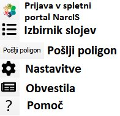
Vtičnik QNarcIS vsebuje dve orodji: Izbirnik slojev omogoča izbor samo želenih slojev iz celotnega nabora, medtem ko orodje Pošlji poligon izvede poljubno prostorsko podatkovno poizvedbo v spletnem portalu NarcIS.
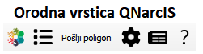
Po meri izdelana orodna vrstica vtičnika poleg teh dveh orodij vsebuje funkcionalnosti, kot so Obvestila, Pomoč, Nastavitve in Prijava v spletni portal NarcIS.
Orodje Izbirnik slojev omogoča izbor samo želenih slojev iz celotnega nabora slojev vtičnika QNarcIS (več kot 250). Uporabnik sam na preprost način vključi samo tiste sloje, ki jih potrebuje za opravljanje nalog.
Ob izbiri orodja Izbirnik slojev se odpre novo okno s seznamom vseh slojev, ki so na voljo za uporabo. Z dvojnim klikom na izbrani sloj, se vam le-ta odpre v projektu v QGIS v oknu »Layers«. Dosegljivi sloji se v Izbirniku slojev obarvajo zeleno, trenutno nedosegljivi pa z rdečo barvo. Prednastavljena urejena hierarhična struktura se iz Izbirnika slojev pri izbranih slojih prenese v okno »Layers«.
Izbirnik slojev vsebuje polja Ime sloja, Tip servisa, Vir servisa ter Prikaz pri merilu. Vsebuje tudi hitri iskalnik za lažjo izbiro želenih slojev.
Vsi sloji v vtičniku so pripravljeni z javnimi spletnimi servisi, kar omogoča prenosljivost. Polje Tip servisa definira, kakšen je način prikaza podatkov. Večina je objektnih spletnih servisov (WFS), s čimer omogočimo izvajanje poizvedb. Vir servisa uporabniku pove, katera organizacija je odgovorna za servisiranje posameznega sloja v vtičniku. Ni pa vir servisa nujno enak organizaciji, ki je lastnica sloja. Polje Prikaz pri merilu poda informacijo, pri kakšnem pogledu (merilu) bo sloj izrisan (viden). Hitri iskalnik pri filtriranju v hierarhičnem drevesu prikaže vse sloje, katerih predniki vsebujejo iskano besedo. Iskanje izvedemo z vnosom v polje »Iskanje po katalogu…«.
Vsi sloji vsebujejo primerno simbologijo, nekateri imajo vidne oznake ter imajo po potrebi določen prikaz merila. Nekateri sloji imajo vneseno neposredno povezavo prek akcije (»actions«) do vsebin v spletnem portalu NarcIS, kjer so uporabniku na voljo dodatni atributi za izbrane objekte.
Vse sloje lahko v svojem projektu v QGIS poljubno prestavljamo v oknu »Layers«, jim spreminjamo simbologijo, omejitev pogleda in druge nastavitve.
Projekt v QGIS lahko shranimo in ga tudi delimo. Ob ponovnem odprtju shranjenega projekta bodo vsi predhodno izbrani sloji iz Izbirnika slojev že samodejno prisotni.
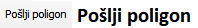
Orodje Pošlji poligon poljubno območje pripravi za nadaljnjo obdelavo v spletnem portalu NarcIS. Uporabnik izbere ali nariše poligon, ki se zapiše v bazo, naprej pa ga lahko uporablja v spletnem portalu NarcIS za izvajanje podrobnejših analiz.
Uporabnik lahko izbere poljubni poligon iz nabora slojev v vtičniku QNarcIS ali lokalno shranjenih slojev, lahko pa izbere poljubno narisani poligon. Lahko je sestavljen iz več poligonov (»multipolygon«).
Za izbrano območje je v spletnem portalu NarcIS možno pridobiti podatke o naravovarstvenih in drugih vsebinah, kot so zabeležene vrste na območju, območja s statusom, strokovna mnenja ZRSVN itn.
Orodje Pošlji poligon lahko uporabljajo izključno registrirani uporabniki spletnega portala NarcIS. V spletnem portalu NarcIS uporabniki vidijo zgodovino lastnih izdelanih poligonov, ki jih lahko kadar koli pregledajo in urejajo. Zapisi se na vstopni strani spletnega portala NarcIS shranijo v kartici QGIS pod gumbom »Moji poligoni«.
Uporabnik v programu QGIS poljubno izbere poligon in ga s klikom na gumb »Pošlji izbrani poligon«
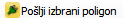
, ki se nahaja v orodju, posreduje v spletni portal NarcIS. Uporabnik lahko vnese tudi opombo.Izpiše se z zeleno obarvana vrstica: »Uspeh: Poligon je bil uspešno dodan v bazo. Povezava do poročila za dodani poligon.«
Uporabnik na zadnji del sporočila klikne in odpre se brskalnik s povezavo do spletnega portala NarcIS. Če uporabnik še ni vpisan v spletni portal NarcIS, se vanj prijavi. Odpre se zavihek z izbranim poligonom. Tega potrdi s klikom na »Potrjujem poligon«, če je izbral pravo območje. Če uporabnik ni izrisal pravega želenega območja, cel proces izbire poligona ponovi.
Za lažji pregled je v orodju Pošlji poligon, kot tudi v spletnem portalu NarcIS, dodano tudi iskanje po preteklih poligonih. Iskanje v orodju Pošlji poligon uporabnik izvede z vnosom v polje »Iskanje po tabeli…«, v spletnem portalu NarcIS pa z vnosom v iskalno vrstico (»Poročilo o iskanju«).
Pri prvi uporabi programa QGIS mora uporabnik vpisati NarcIS uporabniški elektronski naslov in geslo, ki je enako uporabniškemu profilu spletnega portala NarcIS. NarcIS uporabniški elektronski naslov in geslo je treba vpisati samo ob prvem vpisu. Če se pri vnosu uporabniškega profila zmotite, vas bo sistem na to opozoril in postopek vpisa ponovite.
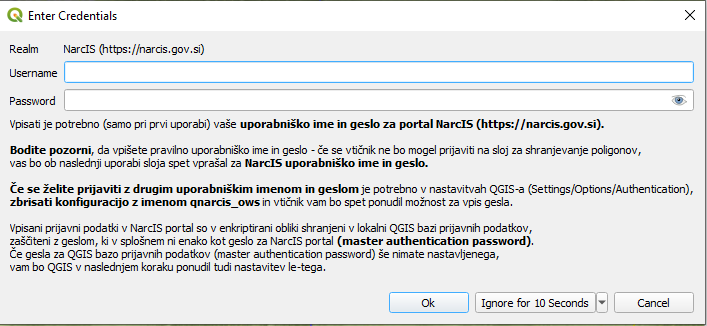
Če se uporabnik želi prijaviti z drugim uporabniškim imenom in geslom, je treba v nastavitvah programa QGIS (»Settings« -> »Options« -> »Authentification«) odstraniti konfiguracijo z imenom »qnarcis_oauth«, ter zapreti QGIS. Ob ponovni izbiri orodja Pošlji poligon, bo sistem uporabniku ponudil nov vnos uporabniškega profila. Enako stori tudi uporabnik, ki je zmotno vnesel uporabniški elektronski naslov.
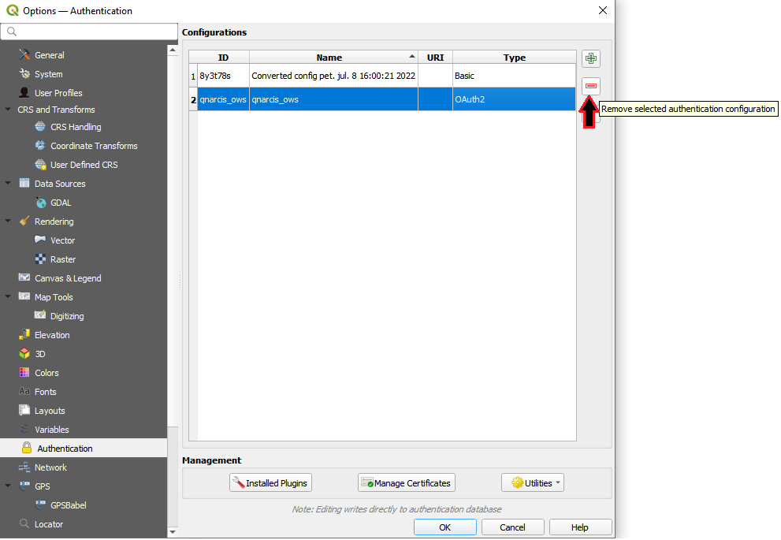
Ob prvem vnosu NarcIS uporabniškega profila v orodje Pošlji poligon je treba vnesti tudi »master authentication password«, s katerim uporabnik programa QGIS dostopa do lokalne QGIS baze prijavnih podatkov (ta ni isti, kot dostop do spletnega portala NarcIS). Če geslo za QGIS bazo prijavljenih podatkov (»master authentication password«) še ni bilo nastavljeno, bo QGIS ponudil uporabniku njegovo nastavitev. Uporabnik si izbere poljubno geslo.
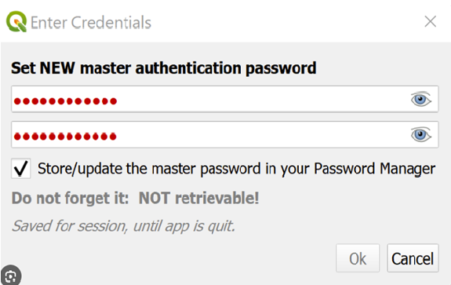
Za samodejno (avtomatsko) posodabljanje vtičnika QNarcIS mora uporabnik preveriti, da so samodejne posodobitve vtičnikov v programu QGIS vklopljene. V orodni vrstici programa QGIS se izbere »Plugins« ter nato »Manage and Install Plugins…«. Uporabnik izbere »Settings« ter na vrhu zavihka preveri, da je obkljukana opcija »Check for Updates on Startup«.
Ob nadgradnjah vtičnika QNarcIS tako sistem v programu QGIS javi, da je na voljo nova posodobitev vtičnika. Nadgradnjo uporabnik izbere.
Nadgradnjo lahko uporabnik tudi ročno izbere v programu QGIS, kjer v istem meniju »Plugins« izbere »Installed« ter vtičnik »qnarcis«, nato pa klikne »Upgrade Plugin«.

Po namestitvi posodobitve vtičnika je potreben ponoven zagon programa QGIS, s čimer je vtičnik QNarcIS posodobljen.
Ob vsaki posodobitvi vtičnika se samodejno nadgradi tudi katalog slojev. Neodvisno od posodabljanja vtičnika pa ta ob vsakem zagonu programa QGIS tudi preveri, ali je na voljo novejša različica kataloga slojev in jo namesti, če je na voljo.
Ob prvem zagonu programa QGIS po posodobitvi kataloga slojev (novi sloji, spremenjena struktura) se spremembe avtomatsko namestijo, sistem pa javi opombo: »Nameščanje kataloga slojev: Prosim počakajte, da se nameščanje kataloga slojev konča.«.
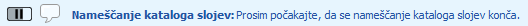
Počakati je treba nekaj trenutkov, da se namestijo vse spremembe. Sistem javi »Task complete: Nameščanje novega kataloga slojev« ter »Nameščanje novega kataloga slojev: Nov katalog slojev je bil uspešno nameščen«.
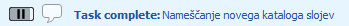
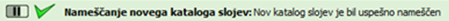
Po namestitvi posodobitve kataloga slojev je potreben ponoven zagon programa QGIS, s čimer je katalog slojev posodobljen.
Nadgrajevanje vtičnika ni potrebno, kadar se spremenijo zgolj vsebinske spremembe.
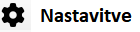
Nastavitve uporabniku omogočajo možnost izbora države vtičnika QNarcIS ter možnost nastavitve privzetega sloja ob zagonu programa QGIS.
Vtičnik je prenosljiv v tujino, zato je poleg vtičnika za Slovenijo (SI) trenutno mogoče izbrati vtičnik za Kosovo (XK). Možna je nastavitev privzete države, v osnovi je to Slovenija.
V nastavitvah lahko nastavimo privzeti sloj ob zagonu programa QGIS. Privzeti sloj ob zagonu vtičnika za Slovenijo je »Pregledna topografska karta«. Izbiro lahko spremenimo za katerikoli drugi sloj, ki je na voljo v vtičniku, lahko pa prikaz privzetega sloja izklopimo.
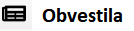
Obvestila neposredno prikažejo vsa obvestila iz foruma QGIS spletnega portala NarcIS, ki omogoča izmenjavo dobrih praks in povratnih informacij. Zabeležena je vsa nova vsebina vtičnika QNarcIS – opisani so zadnji popravki, novi sloji ter dodane funkcionalnosti in drug razvoj vtičnika.
V forumu QGIS lahko registrirani uporabniki delijo mnenja, podajajo pripombe, opišejo potrebe ali povprašajo za nasvete ter za pomoč glede vtičnika, kot tudi na splošno glede delovanja programa QGIS ali glede drugih težav. Obvestila so prikazana v časovnem sosledju.
Forum QGIS se nahaja na vstopni strani spletnega portala NarcIS v kartici Forum QGIS (desno spodaj).
V vtičniku QNarcIS je dodana povezava do spletnega portala NarcIS, ki je tesno povezan z vtičnikom. V spletnem portalu NarcIS se nahajajo poligoni registriranega uporabnika, izdelani z orodjem Pošlji poligon (glej poglavje Pošlji poligon), prek akcije »actions« v spletnem portalu NarcIS izvemo dodatne podatke o izbranem objektu (glej poglavje Izbirnik slojev), v forumu QGIS spletnega portala NarcIS so navedena vsa obvestila (glej poglavje Obvestila), v spustnem meniju Podporni podatki pa se nahajajo vsi sloji vtičnika v primerni hierarhični strukturi z vsebovanimi metapodatki.
Na vstopni strani sistema NarcIS se na kartici QGIS (levo spodaj) nahajajo navodila za namestitev vtičnika QNarcIS in gradiva preteklih osnovnih ter naprednih tečajev za program QGIS s poudarkom na vtičniku QNarcIS, izvedenih v projektu LIFE NarcIS. V navodilih je zapisana tudi povezava za prenos programa QGIS, navodila za posodobitev vtičnika in kataloga slojev ter navodila za uporabo orodja Pošlji poligon.
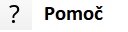
Pomoč vsebuje več informacij glede samega delovanja vtičnika, razložene so obstoječa orodja ter funkcionalnosti in drugo.
Uporabniku so lahko v pomoč spodnji posnetki, ki naslavljajo temo uporabe vtičnika QNarcIS in programa QGIS:
posnetek s 3. NarcIS seminarja: QGIS kot sistemski GIS slovenskega naravovarstva in vtičnik QNarcIS,
posnetek predavanja Naravovarstveni vtičnik za QGIS – QNarcIS na konferenci Open Source Geospatial Slovenija 2023,
serija kratkih videoposnetkov:
Uporabniki lahko pripombe in predloge za izboljšavo vtičnika QNarcIS sporočijo v forum QGIS spletnega portala NarcIS.
Osebno jih lahko sporočijo tudi prek elektronske pošte na: